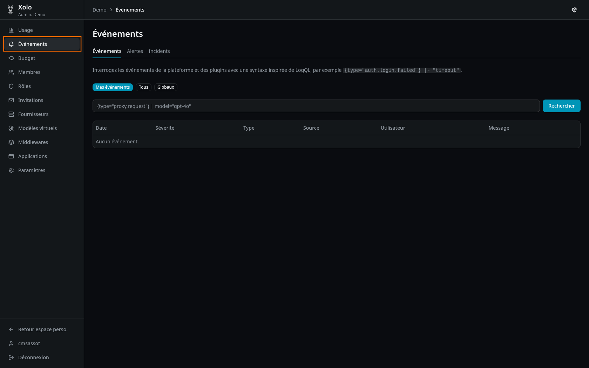
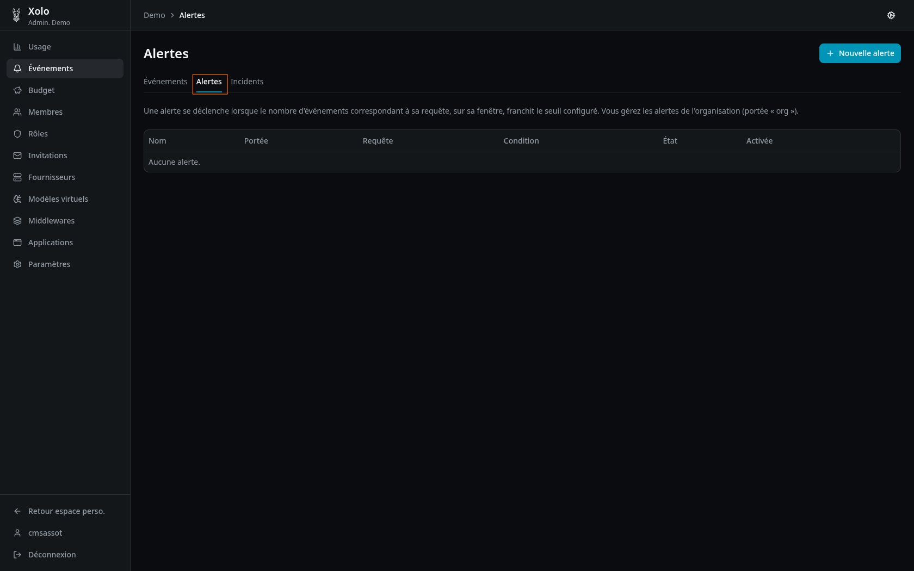
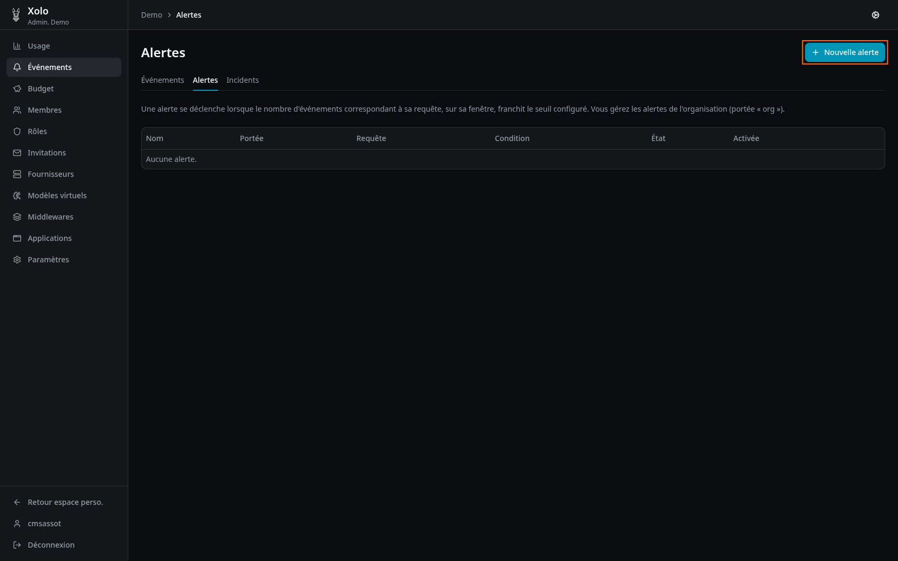
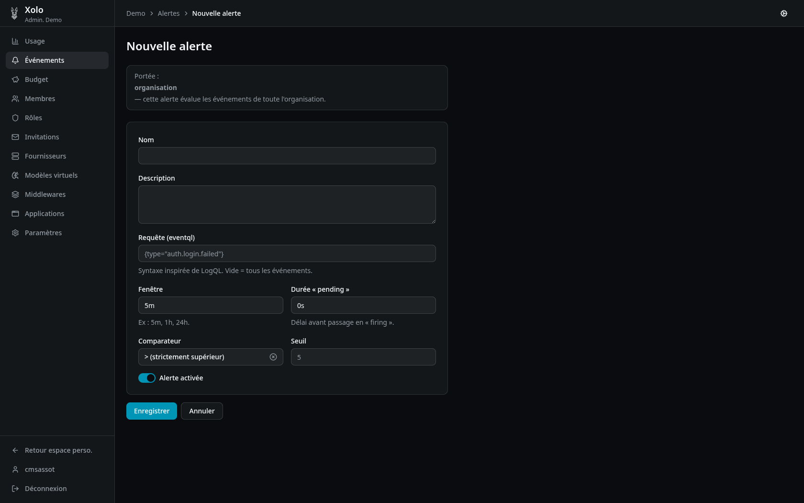
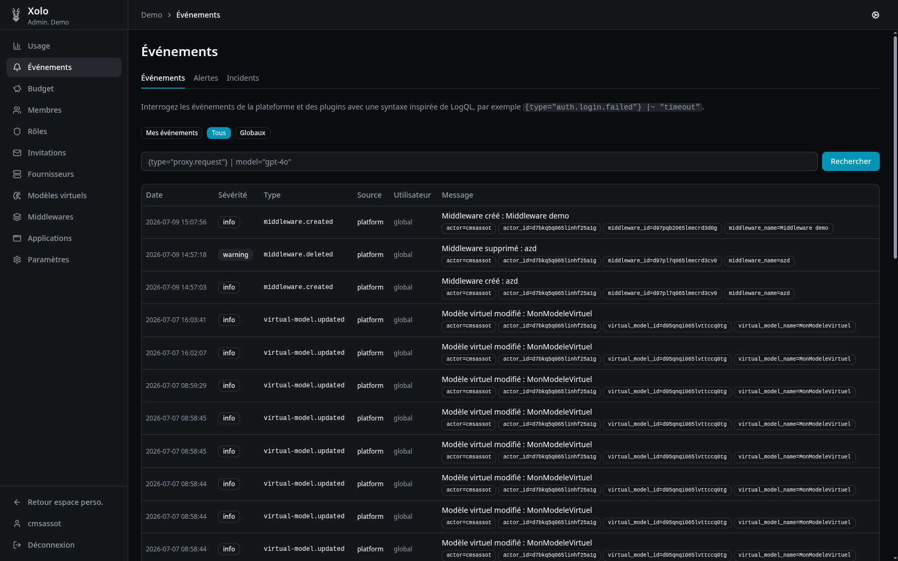

Événements¶

Qu'est-ce qu'un événement ?¶
Un événement est une entrée de journalisation relative à une action survenue dans la plateforme Xolo. Les événements permettent de tracer l'activité, diagnostiquer des problèmes et déclencher des alertes.
Types d'événements courants¶
| Type | Description |
|---|---|
proxy.request |
Requête API vers un modèle |
auth.login.* |
Tentatives de connexion (succès, échec) |
quota.exceeded |
Dépassement de budget |
middleware.* |
Événements des middlewares |
Niveaux de sévérité¶
| Sévérité | Description |
|---|---|
| info | Information générale |
| warning | Avertissement, attention requise |
| error | Erreur |
Accéder aux événements¶
- Allez dans votre organisation :
/orgs/{slug}/ - Cliquez sur Événements dans le menu
Note : Vous devez disposer de la permission
events:read:allpour voir tous les événements de l'organisation.
Parcourir les événements¶
Filtres par portée¶
| Portée | Description |
|---|---|
| Mes événements | Uniquement vos propres événements |
| Tous | Tous les événements de l'organisation |
| Globaux | Inclut les événements de plateforme |
Syntaxe de requête (LogQL)¶
Les événements peuvent être filtrés avec une syntaxe inspirée de LogQL :
Exemples :
{type="proxy.request"}
{type="auth.login.failed"}
{type="proxy.request"} | model="gpt-4o"
{type="auth.login.failed"} |~ "timeout"
Colonnes affichées¶
| Colonne | Description |
|---|---|
| Date | Horodatage de l'événement |
| Sévérité | Niveau de criticité |
| Type | Type de l'événement |
| Source | Origine de l'événement |
| Utilisateur | Utilisateur concerné (ou "global") |
| Message | Description de l'événement + attributs |
Alertes¶

Les alertes permettent d'être notifié lorsque certains événements se produisent.
Créer une alerte¶
-
Cliquez sur Nouvelle alerte

-
Remplissez les informations :

| Champ | Description |
|---|---|
| Nom | Nom de l'alerte |
| Description | Description optionnelle |
| Requête | Syntaxe LogQL (ex: {type="auth.login.failed"}) |
| Fenêtre | Durée d'évaluation (ex: 5m, 1h, 24h) |
| Durée « pending » | Délai avant passage en « firing » |
| Comparateur | Opérateur de comparaison (> >= < <= ==) |
| Seuil | Valeur numérique |
| Activé | Activer ou désactiver l'alerte |
- Cliquez sur Enregistrer.
États d'une alerte¶
| État | Description |
|---|---|
| ok | Fonctionnement normal, seuil non atteint |
| pending | Seuil atteint, en attente du délai « pending » |
| firing | Alerte déclenchée |
Exemple :

Portée des alertes¶
| Portée | Description |
|---|---|
| org | Évalue tous les événements de l'organisation |
| perso | Évalue uniquement vos propres événements |
Incidents¶
Les incidents sont l'historique des alertes déclenchées.
Informations affichées¶
| Information | Description |
|---|---|
| Nom de l'alerte | Alerte qui a déclenché |
| Date de déclenchement | Quand l'incident a commencé |
| Date de résolution | Quand l'incident a été résolu (si applicable) |
| Pic | Valeur maximale atteinte |
| État | firing ou resolved |
| Événements épinglés | Liste des événements contributifs |
Note : Les événements épinglés sont conservés au-delà de la fenêtre glissante habituelle.
Permissions¶
| Action | Permission requise |
|---|---|
| Consulter ses propres événements | Aucune (accès automatique) |
| Consulter tous les événements | events:read:all |
| Gérer les alertes d'organisation | events:write |
| Créer des alertes personnelles | events:alerts:own |